About me
Think of the universe as an eternal creative unfolding. Trees blossom. Cells replicate. Rivers forge new tributaries.
I love designing collaborative web-based systems, running usability studies and building prototypes that are both user-centred and technically sound. I've led projects across e-commerce, scientific data visualisation and sustainability, working with Figma, Angular, HTML/CSS and Agile workflows. Lately I've been enjoying the creative rhythm of vibe coding.
Right now I'm designing and shipping at LifeLoop.
- Product Design
- User Research
- UX Design
- Visual Storytelling
01 — Wanderlust & wonder
Off the clock, I'm usually somewhere new
Whenever I have time and money, I pack my bags and fly. Traveling has taught me the essence of storytelling and discovery, and that fuels my creative process: it's all about creating meaningful, memorable experiences.


02 — Stories behind the screens
My bookshelf
Reading is how I exercise empathy: stepping into other lives to better understand the human experience. It's what drives me to design with meaning, intention and emotional depth.
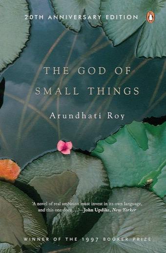
The God of Small Things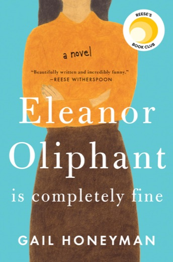
Eleanor Oliphant is Completely Fine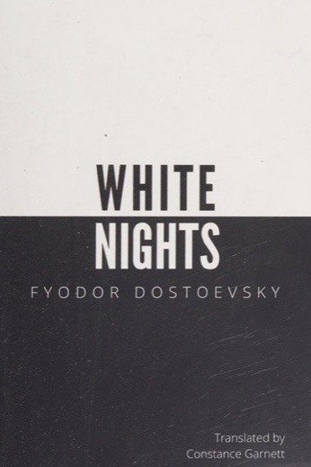
White Nights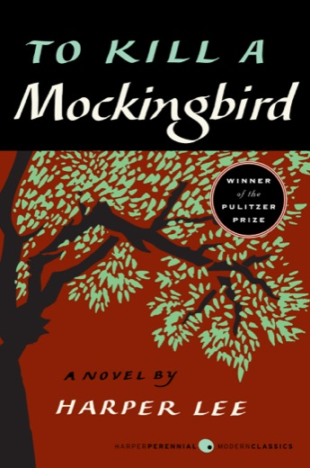
To Kill a Mockingbird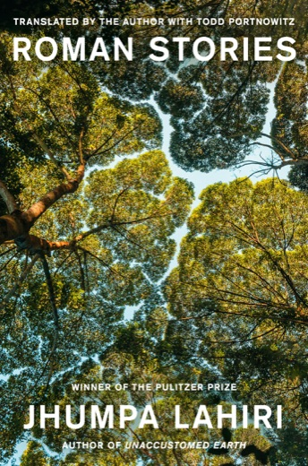
Roman Stories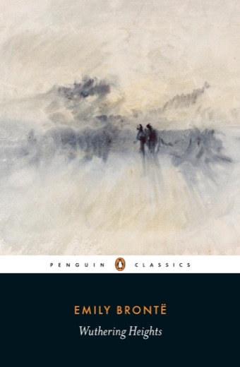
Wuthering Heights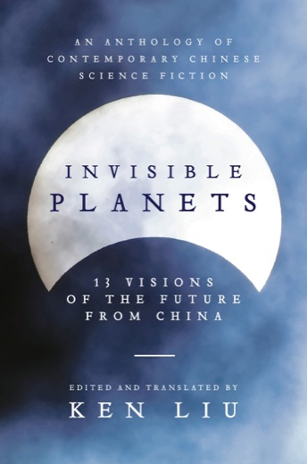
Invisible Planets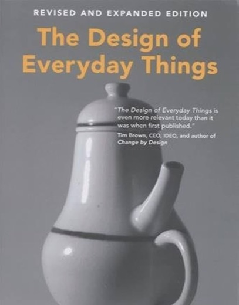
The Design of Everyday Things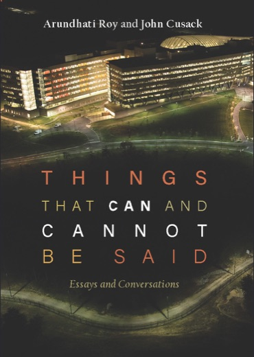
Things that Can and Cannot Be Said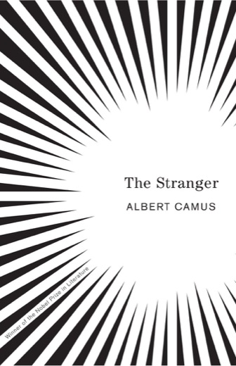
The Stranger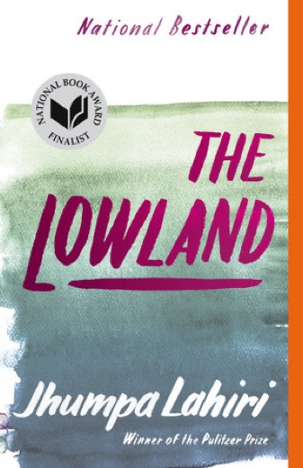
The Lowland- Norwegian Wood
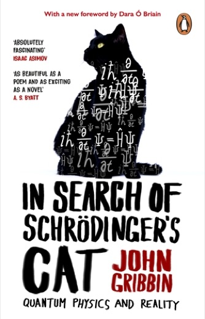
In Search of Schrödinger's Cat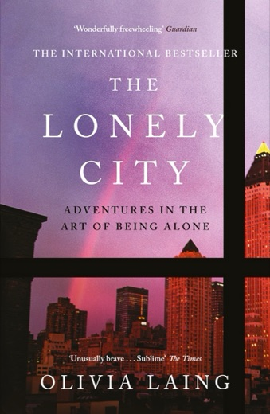
The Lonely City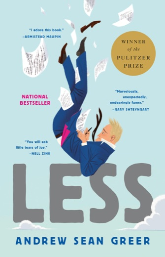
Less
This is only the start.
I'm growing, evolving and dreaming big, and I'd be honored if you came along.
Say hello